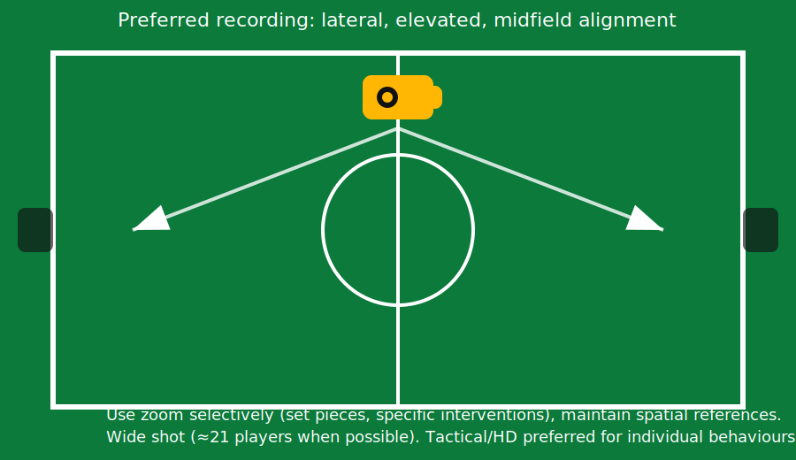

Recording Setup and Transfer of Information (Staff and Players)
The objective is to reduce subjective bias and memory limitations by producing a clear performance record, enabling fast and reliable feedback to support the next microcycle.
Recording Setup (Training and Match)
- Placement: lateral, elevated position aligned with midfield whenever possible.
- Shot: wide shot capturing as many players as possible (≈21 players when feasible).
- Angle: consistent lateral angle to preserve spatial references across sessions.
- Zoom: used selectively (set pieces, specific interventions), avoiding excessive loss of context.
Operational Checklist
- Test battery/storage before session.
- Confirm frame includes both corridors and key interior space.
- Maintain stable horizon and consistent zoom baseline.

Workflow: From Recording to Actionable Feedback
- Tag target behaviours during or immediately after the session (FB decisions under pressure).
- Cut clips into two categories: positive examples and corrective examples.
- Organise clips using a consistent repository structure and naming convention.
- Deliver a short package to staff within 24–48 hours to inform the next sessions.
- Optional player feedback: short, selective, and contextualised (avoid overload).
Clip Package Structure
YYYY-MM-DD__Uxx__Session(Mon/Tue/etc)__Task(PSS/SSP)__Theme(FB_Progression)__Clip01.mp4
YYYY-MM-DD__Uxx__Match__Theme(FB_Progression)__Clip03.mp4
Communication Principles
- Staff: prioritise decision quality and links to the game model; avoid clip overload.
- Players: reinforce what “good” looks like; use corrective clips sparingly and with clear alternatives.
- Timing: deliver quickly after the session/match so the next microcycle can be planned with objective evidence.
References (Course Basis)
This proposal follows the course methodology on observation, recording, individual training blocks, and information transfer. See the attached modules for the foundational framework.
- Module 3 — Observation in the game (recording, angles, transmission workflow).
- Module 4 — Individual observation of the player (individual training logic and reporting).
- Module 2 — Role alignment and structured reporting culture (supporting professional processes).